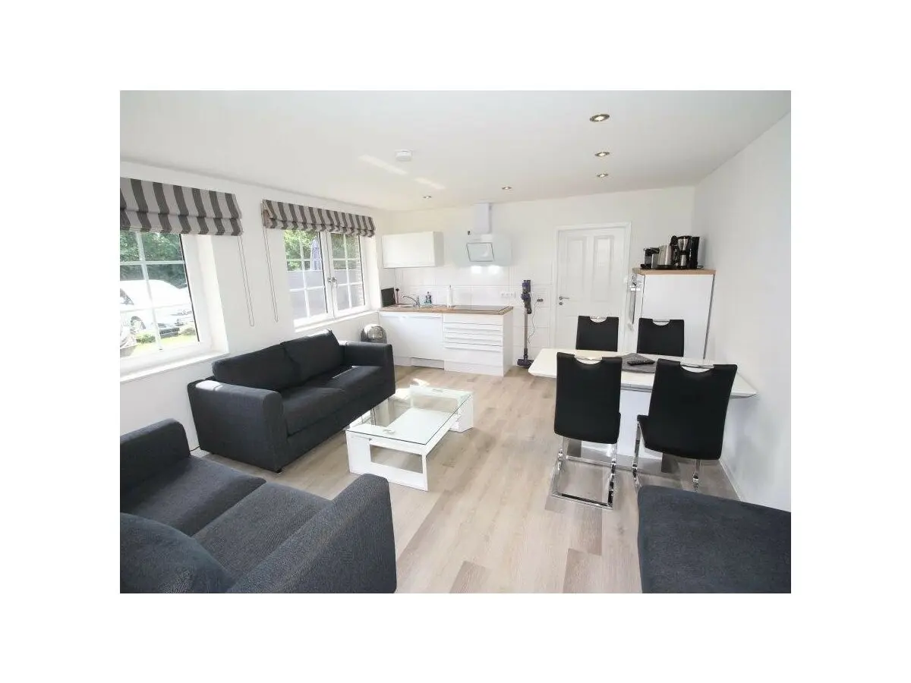
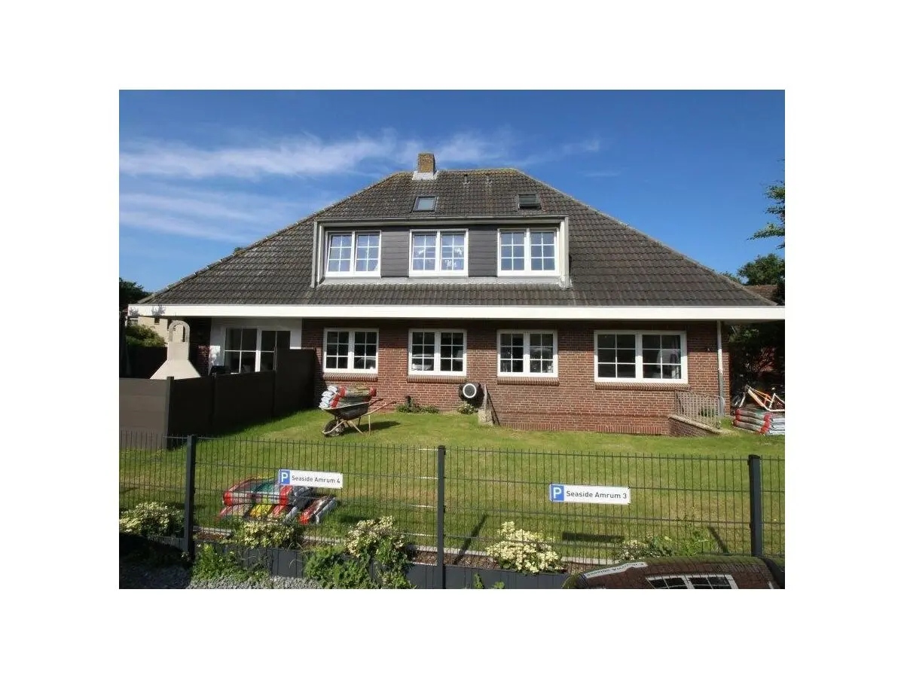
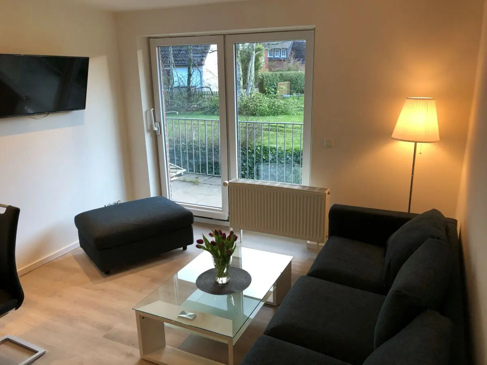
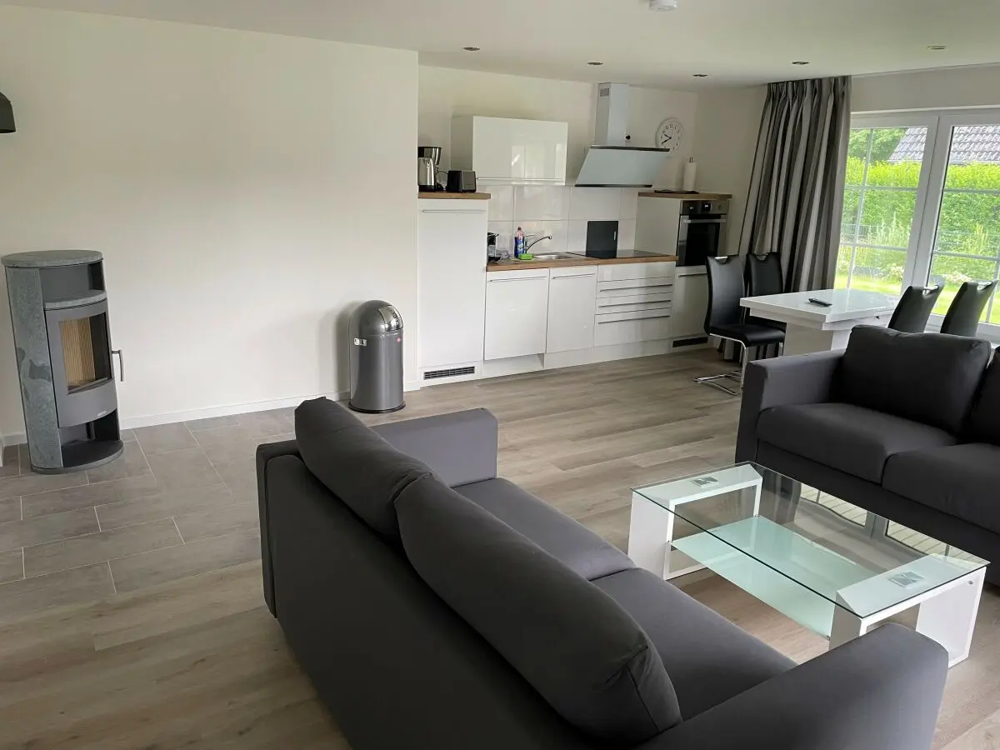
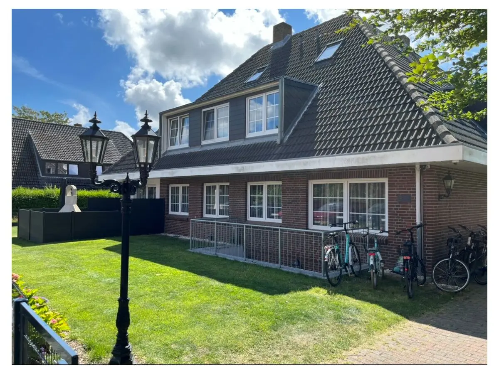
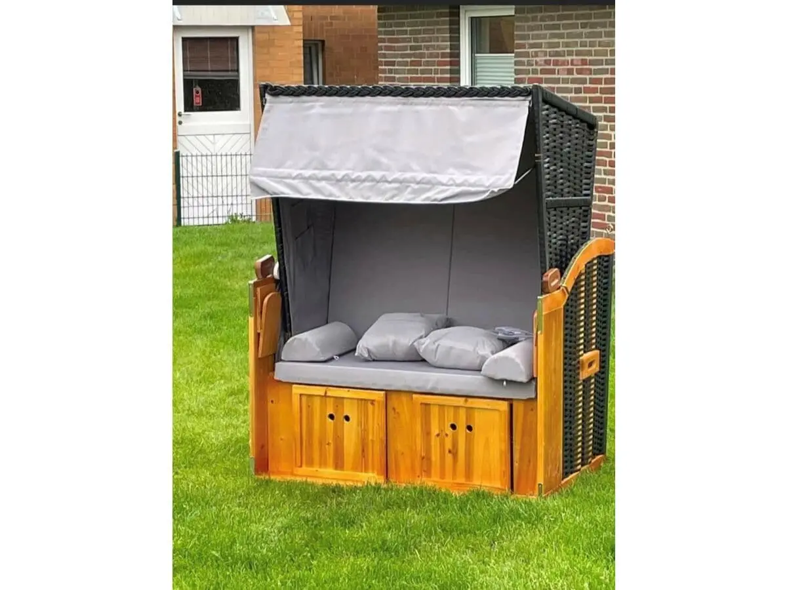
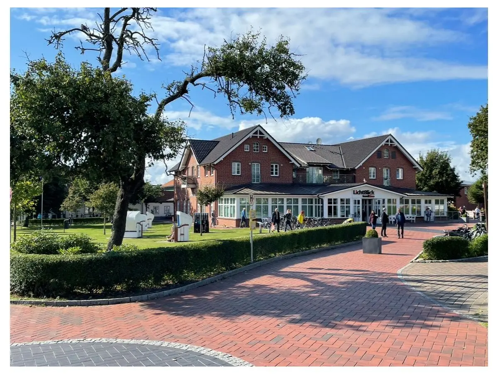
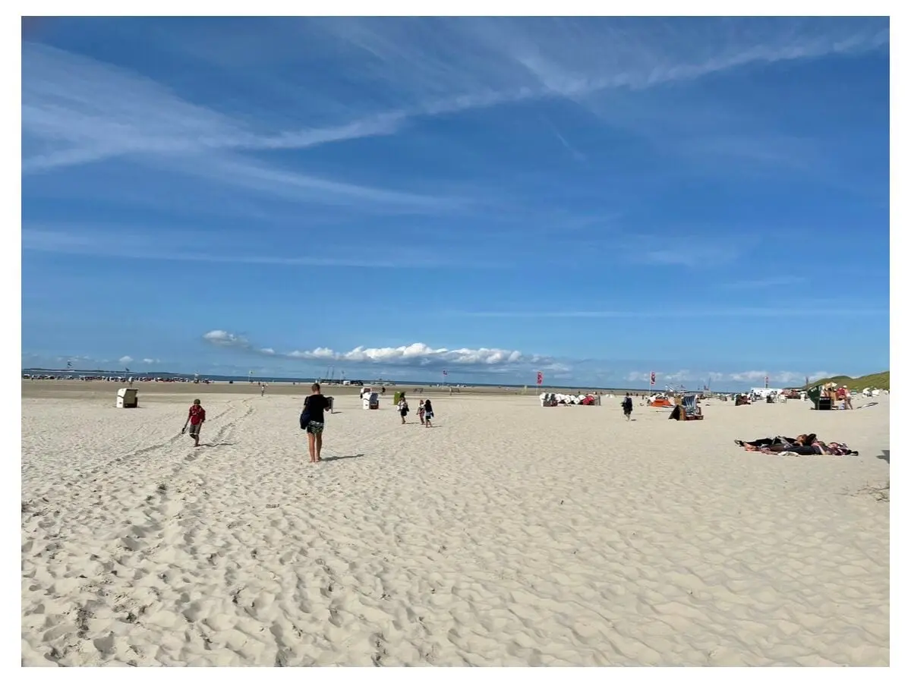
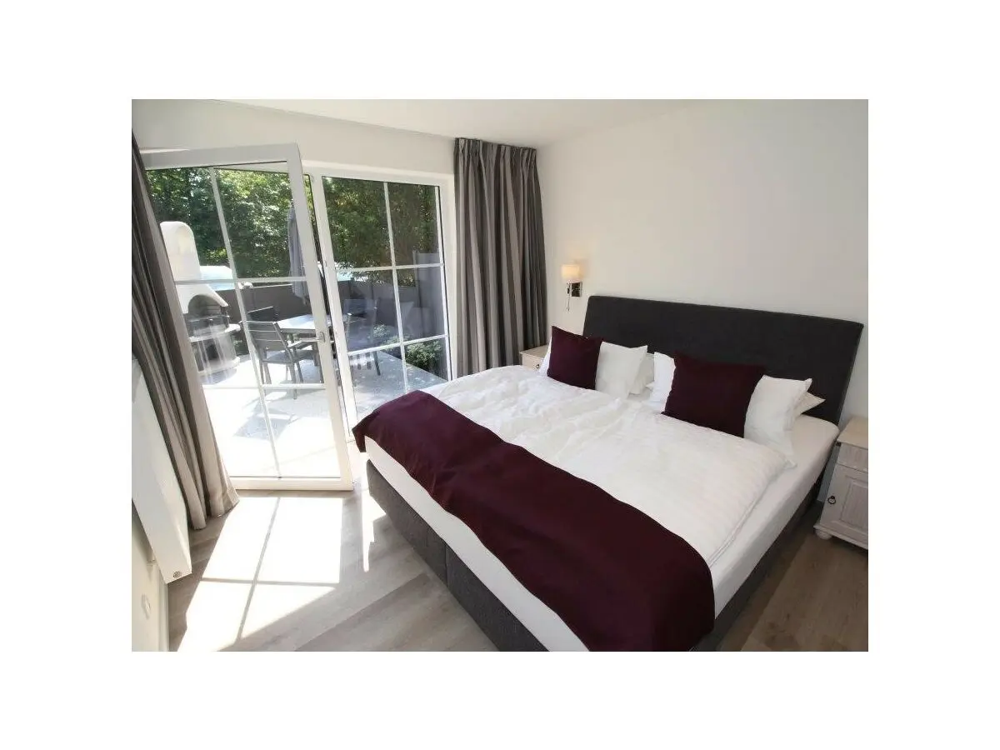
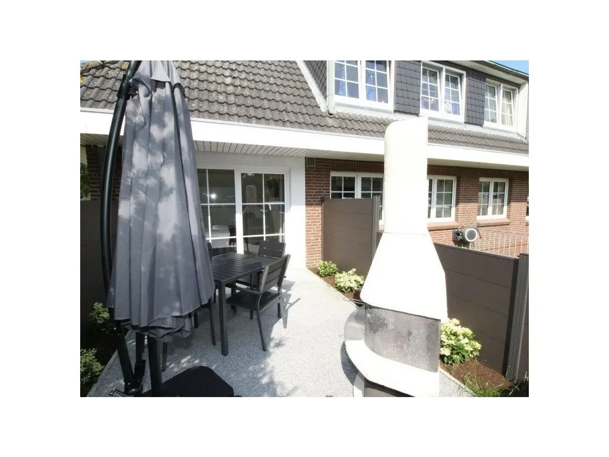

Wohnung 4
64 m²3 Schlafzimmerbis 6 Gäste
Erdgeschoss mit Terrasse. Drei Schlafzimmer mit Boxspringbetten (180 × 200), separates WC und Bad. Ideal für Familien.
Wohnung 4 anfragen →Ferienwohnungen · Norddorf auf Amrum
Helle, 2020 aufwendig sanierte Ferienwohnungen mitten im Ortskern von Norddorf. Supermarkt, Restaurants und Kino sind ein paar Schritte entfernt. Zum Kniepsand fährt in der Saison der Strandshuttle.
Wohnungen ansehen04682 9688940
Unsere Wohnungen
Alle Wohnungen sind hell und modern eingerichtet, mit Einbauküche, W-LAN und Waschmaschine.

Erdgeschoss mit Terrasse. Drei Schlafzimmer mit Boxspringbetten (180 × 200), separates WC und Bad. Ideal für Familien.
Wohnung 4 anfragen →
Großzügig mit zwei Bädern, Wohnbereich mit Einbauküche und Zugang zur großen Außenanlage. Hunde auf Anfrage.
Wohnung 7/8/9 anfragen →
Mit Terrasse und großem Bad mit Eckbadewanne. Ruhig gelegen, nah an der Amrumer Odde.
Wohnung 5 anfragen →
Kompakt und gemütlich für einen Inselurlaub zu zweit oder mit Kindern.
Wohnung 13 anfragen →
Das kleine Inselnest für zwei: alles da, was man für Strandtage braucht.
Wohnung 10 anfragen →
Seaside Amrum hat noch mehr Wohnungen im Haus. Fragen Sie uns nach Ihrer Reisezeit, wir finden die passende.
Freie Wohnung finden →Ausstattung
Was alle Gäste bei Seaside Amrum erwartet.
Die Lage
Ladenpassage, Dorfplatz mit Kino und Abenteuerland liegen um die Ecke. Zum Strand fährt in der Hauptsaison der Strandshuttle.



Gut zu wissen
Direkt beim Gastgeber
Ohne Portal, ohne Umweg. Sie schreiben uns, wir antworten persönlich mit Verfügbarkeit und Preis.